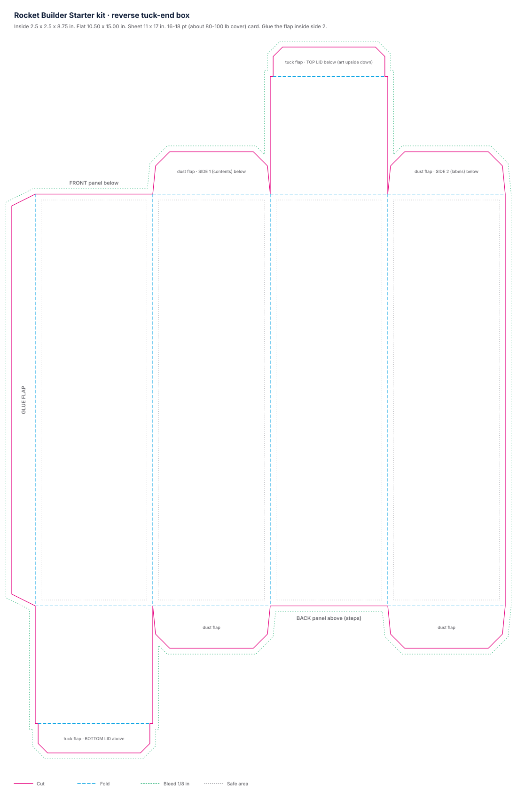

| Height | 300 mm · 11.8 in |
| Body diameter | 21 mm |
| Weight, no motor | 44 g · 1.6 oz |
| Stability | 1.1 cal |
| B6-4 | 140 m · 465 ft |
| B4-6 | 175 m · 580 ft |
| C6-7 | 355 m · 1,160 ft |
This rocket was designed with Rocket Builder, a free web app. Change the height, fins and nose, check that it flies straight, and print your own.
rocket.quiverdesignworks.net
For ages 12 and up. Launching needs adult supervision. Read all instructions before you fly. Use only certified model rocket motors, installed by an adult.
| B motors | 60 m · 200 ft field |
| C motors | 120 m · 400 ft field |
